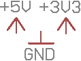
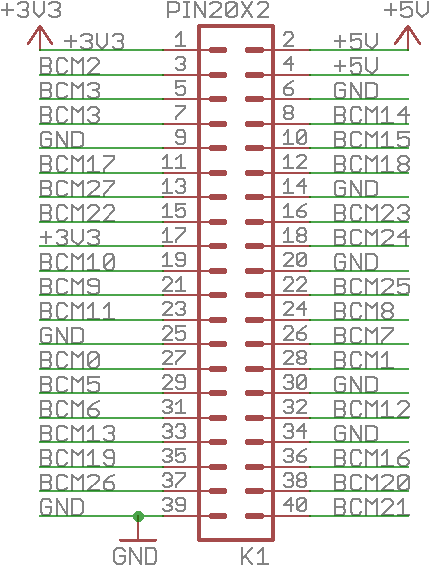
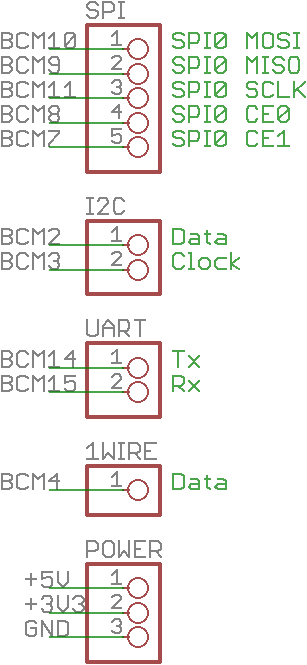
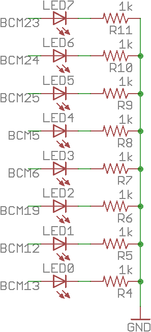
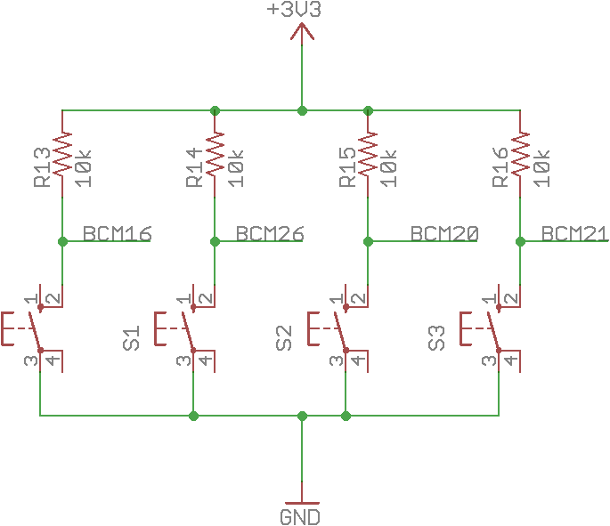
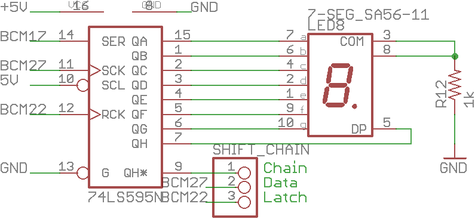
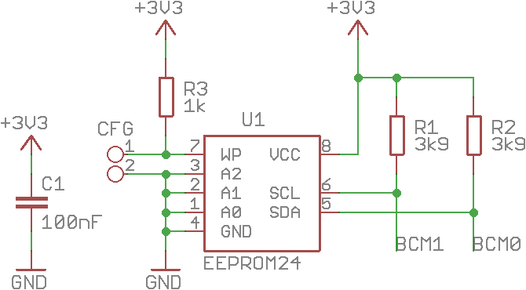
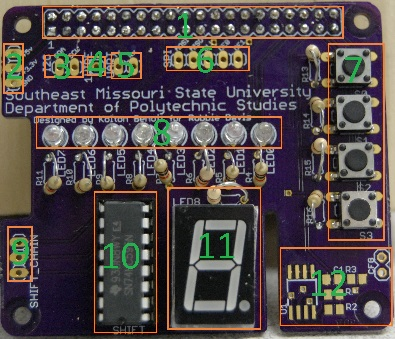
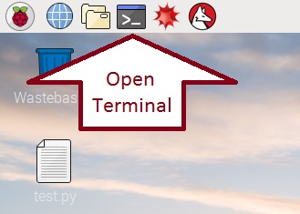
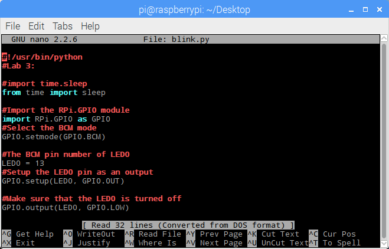

Lab 3:
GPIO Input and Output
Information
The Raspberry Pi 2 has 40 pins and each has different (and multiple) functions available. This makes it rather difficult to remember what does what. Luckily for you, I've put some thought into these labs: open pinout.xyz in another tab and look at the labels for each pin. Compare it to your Pi (make sure you have your pi oriented correctly).Schematic
The schematic for the HAT is fairly simple, as far as electrical schematics go. Here's a crash course in the symbols and the functional sections of each part of the schematic:- These are the two common symbols used to represent a resistor. The resistance value (in Ohms(Ω)) and the resistor number (format R#) is often written with it.
- This is a Light Emitting Diode (LED). The side the big arrow points to (the right side in this diagram) is the cathode (negative) leg and the other side is the anode (positive) leg. This is important because LEDs (diodes in general) only conduct electricity in one direction. Reversing it may lead to the magic smoke escaping! Remove the two small arrows on the bottom and it represents a normal diode.
- This a switch. The physical pin numbers are labeled.
- These symbols are often used to represent voltage supplies and sinks. They don't actually represent a magical source of electricity; they just denote that all lines that connect to one of those symbols are electrically connected. Logical connections like these are used to tiddy up schematics, so that it is easier to understand what's going on. The supplies (the arrows) here are marked with the voltage they supply. The voltages are 5 and 3.3 volts. Notice that 3.3 is written as
3V3instead of3.3V. This is to make it harder to miss the.and mistake3.3Vfor33V. If it wasn't obvious, feeding 33 volts to a PI will release the magic smoke and destroy it!

- This is the main header for the board that connects the HAT to the Pi. Note that its pinout is identical to that found on pinout.xyz. The numbers are the physical pin number. The labels on each of the green lines work in a similar manner to that of the suppies above: lines with the same label are connected, even if the schematic doesn't actually show it. 
- These are all the other headers on the HAT. They're here to make it slightly easier to connect an external device to the Pi. 
- These are the 8 LEDs and their associated resistors. Note that the PI's pin supplies each LED with current when it is turned on. 
- This one is a little more complex: it is the button circuitry. The 10KΩ resistor "pulls up" the line to 3.3 volts. If the button is pressed, the line is connected to ground and the voltage drops. The PI reads the voltage on the line and If the voltage is
HIGH(around 3.3v), the PI knows the button is not pressed. If the voltage isLOW(around 0v) the PI knows that the button was pressed. Debounce (discussed later) is handled in software, but could also have been implemented in hardware by using a capacitor.

- This is the shift register and seven segment display. The shift register is the rectangle on the left. The numbers are the physical pin numbers (starting from the pin left of the notch in the packaging of the chip). Note that the schematic doesn't have them in order. This is to make the schematic a little easier to read and to represent more than one style of IC (integrated circuit) packaging, which may not be in an easy-to-understand layout. And yes, the confusing layout of IC pins does make wire/trace routing a nightmare. Luckily for you, I already did the hard part.
The rectangle on the right with the "8" in it is the seven segment display, if that wasn't obvious. It works in a similar maner as the LEDs above, but is in a different package. It is also labeled with the pyhsical pin number. Some of the pins are labeled from
atog, which represent which segment of the display they connect to, starting from the top segment and moving in a clock-wise order, looping all the way back to the top and ending withgin the middle.DPis the Decimal Point. The header is for chaining shift registers together, which is discussed in the next lab.

- This part of the schematic is only included for completeness as it currently isn't used in any of the labs. Your HAT probably does not even have those pads populated (see the ID EPPROM in the physical layout below). They are part of the system used by the HAT standard for autoconfiguration. It was part of the template used to create the board and was left on; leaving it unpopulated costs no more than deleting it from the board. Maybe you can use it in the future for some neat project? 
Physical HAT Layout
Now, compare the logical schematic with the physical HAT - Main headers
- Power breakout headers
- I2C breakout headers
- 1Wire breakout header
- UART breakout headers
- SPI breakout headers
- Tactile buttons
- LEDs
- Shift register chain headers
- Shift register
- Seven segment display
- ID EEPROM (see the HAT standard.)
Instructions
- Download
blink.pyfrom the Resources section below. Save it to a location you can find in the next step, such asDesktop. - Open the terminal by using the shortcut on the menu bar or by pressing ctrl+alt+t. 
- Change to the directory where you saved your file by typing
cdfollowed by the path to the target directory and press enter⏎. For example,cd ~/Desktopwill change to the Desktop directory. - Run
blink.pyby typingsudo python blink.pyand hit enter⏎ LED0should now be blinking on and off.- Exit the program by pressing ctrl+c.
- Understanding the code: You've made
LED0blink on and off, but how does this work? - In the terminal, open
blink.pyby enteringnano blink.py. This will open the file in the next editornano, an easy to use command line text editor. Note that your mouse isn't very useful in the terminal, so don't bother using it. Use the arrow keys instead.

- Read through the code line by line:
- The first line is used to select which interpreter is used to execute your code, so you don't actually need to use
sudo python blink.pyto run it, you could usesudo ./blink.pyif the file permissions are set correctly. It isn't always required, but it is good practice to make sure the system knows what interpreter to use. - Lines preceded by a
#are comments; they aren't executed as commands. They are there so the programmer can write notes to identify the source code, explain what the code does, etc. These labs will mostly skip comments, unless they have important information. Feel free to read them, or don't. I'm just a web page. - The line below imports the
sleepmethod from thetimemodule.sleepis used to pause code execution for a given amount of time. - This line imports the GPIO module. It will be called later as
GPIO. It is used to control the PI's General Purpose Input/Ouput pins. - This line tells
GPIOthat the pin numbers passed to it represent the BCM (Broadcom) numbers and not the physical pin numbers. You could useGPIO.BOARDinstead ofGPIO.BCMto refer to the physical pin numbers. See pinout.xyz. - Declares a variable and store
13in it. Variables are used to store data and can be used in functions and equations.13is the BCM number of the HAT'sLED0is connected to. Refer to the schematic and look at the guide on pinout.xyz, then figure out which physical pin BCM 13 is. - Tells GPIO to allocate
LED0(the variable) and configure it as an output. Remember thatLED0currently contains13. - Tells GPIO to set
LED0LOW, or in other words, turn BCM pin 13 off. To turn the pin on, replaceGPIO.LOWwithGPIO.HIGH. - The next few lines are the first (and last) major structure of the code. It starts a
whileloop, with the condition ofTrue, meaning it will always loop and not stop. Loops allow a programmer to instruct the computer to execute an arbitrary amount of code for a number of times or until a certain condition occurs. Normally, thewhileloop will loop until the condition evaluates toFalse, but since the condition in this loop isTrue, it wil loop indefinitely! This is useful when you want it to happen, but sometimes an infinite loop occurs due to a programmer's mistake. - The next lines are indented with tab⇆ (python requires tabs). This is how python knows the following code is in the loop and not outside. Further indentations are used for nesting of loops or other code structures.
- The next line,
try:is the start of atry... except(sometimes called atry... catch) block. Inside thetry:, code is executed, but if an exception (an error) occurs, the code in theexceptblock is executed. This is how thewhile True:loop is exited: remember when step 6 had you type ctrl+c? This generates aKeyboardInterruptexception and the code in theexceptblock is then executed. Multipleexceptblocks can be used to catch and react to multiple exceptions. Anexceptblock can also catch spesific exceptions by adding the exception's name to theexceptdeclaration, as is done below. - The code inside of the
try:section of the block is what actually turns the LED on and off. Read the code and see if you've learned from the above information! - The last line in this section is
break. It is what actually breaks out of the loop; execution returns to outside the loop. - The very last line in the script tells
GPIOto deallocate all pins. This is important because if a pin isn't deallocated correctly, another program might not be able to use it. Allocation tries to lock the pin to the current program, so other programs don't try to use it. When you ranblink.py, the console may have given a warning that the pin wasn't deallocated correctly the last time it was used, but it would ignore the warning. - You should now understand how
blink.pyworks. Try editing the code. Save your code by typing ctrl+x followed by y to accept changes, then run it withsudo python blink.py. Don't be afraid of making a mistake. As a programmer, you will make mistakes! Try to do the following: - Change how long the LED is on
- Change how long the LED is off
- The HAT has 8 LEDs: change which LED is on (hint: read the schematic)
- Turn multiple LEDs on.
- Download the next code example,
leds.py, but use the command line this time by enteringwget, followed by this websites's hostname, and/3/leds.pyFor example,wget pilabs.example.com/3/leds.py(note that these labs were written before a host name was selected, so that might be wrong.).wgetis a command line utility that will go to the address given and download whatever is there. It is useful when you don't have a web browser or a GUI to use one! - Run
leds.pyand see what it does. Exit it with ctrl+c when you're ready for the next step. - Open
leds.pyinnanoUnderstanding the code: - This line declares and initalizes an array. Arrays are like variables, but they hold more than one value. Think of it as a list of variables all named one name, but each element accessed individually. The elements in this array can be accessed in various ways, which will be explained when it occurs.
- The numbers in this array might look familar to you: they are the BCM numbers of
LED0toLED7 - This is a
forloop (sometimes called aforeachloop in other languages). It is one of the ways the elements of the arrayLEDsare accessed. It takes each element, one at a time, and puts it in a temporary variable calledLED, then the code inside can use it. Thisforloop is allocating all of the pins represented byLEDsand making sure they are turned off. - This lonely little line declares a counter variable, which will be important for our inner loops that are explained next.
- This is one of the nested loops: a loop within another loop.
- Look at the condition for the loop:
i < 7. It will take the current value ofiand compare it to7. If it is less than7, it evaluates toTrue. If it is equal to or greater than7, it evaluates toFalse. If it evaluates toTrue, the loop's code is executed, if it isFalse, it is skipped and execution continues on. - Look at the body of the
whileloop. The body turns the current LED represented byioff, turns the next LED (represented by adding1toi) on, waits for 1/10th of a second, adds1toiand assigns the result back toi. - The current LED's pin number is accessed from the array
LEDsby putting the index value in[]. - Important: python arrays are "0 indexed", meaning the index starts at
0and goes up to 1 less than the total number of items in the array. Trying to access an index outside of that range results in anIndexErrorexception, a common error made bynewall programmers. Notice how the while loop won't run ifiis equal to7. This is because, in the body of the loop, statementGPIO.output(LEDs[i + 1], GPIO.HIGH)adds1toi. Ifiwere to ever contain7, this statement would attempt to access index8, which is an error! This is often known as an "off-by-one" error. - Important: the last line of the loop adds
1toi. Forgetting to add to a counter in a "counter-controlled" loop is a common cause of accidental infinite loops! - The next inner loop is similar to the last one. The difference is that it only loops if the value in
iis greater than0. - Important:The last line subtracts
1fromi. Adding to a counter in a counter controlled loop when your loop's condition expects it to be substracted from is a common cause of accidental infinite loops! For example, if1had been added toi,iwould never* be less than0! - You should now understand how
leds.pyworks. Try editing the code to do the following: - Make the LEDs turn on and off slower.
- Make the LEDs turn on and off faster.
- Reverse the order the LEDs turn on/off in.
- Reverse the order the LEDs turn on/off in, with the orginal loops!
- Turn every other LED on/off.
- The previous two examples are useful examples of output. But, what about input? The next example,
button.py, will use the tactile buttons, if it wasn't obvious from the name. Downloadbutton.pyfrom the Resources section or usewgetwith the same address as last time, but changeleds.pytobutton.py. - Run
button.pyand follow the instructions given by the program. When you're ready for the next section, close the program and open it innanoUnderstanding the code: - This example is similar to the
leds.pyexample, where the BCM pin numbers are stored in an array, an array calledbuttons, in this case. - The allocation is also similar to the allocation for the LEDs done in
leds.py, but the pins are set asGPIO.INinstead ofGPIO.OUT. This instructsGPIOto use the pin as an input. Any of the GPIO pins can be used for either Input or Output for any General Purpose, be it for powering LEDs, reading input from switches, actuating relays, activating transistors, and much more. - Warning: The Raspberry PI's GPIO pins are not 5 volt tolerant! Only connect 3.3 volts to these pins!
- This inner loop is a similar counter-controlled loop as was used in
leds.py. - The second line shown below is an
ifstatement, which checks if a condition isTrueand will execute code inside if it is. Theif:block can be followed by aelse:block (in a similar structure as thetry...exceptblock) to execute code if the condition isFalse. You have already learned about these conditions; they're identical to those used inwhileloops, but only executed once. Thisifstatement checks to see if the code is not (!=)LOW - The next line has a compound statement;
str.format()is executed beforeprint().str.format()takes a string and will format it according to a set of rules. In this case, it replaces{0}with the first argument in the following arguments, which is the variablei.str.format()then returns that formatted string toprint(), which will output the given string to the console. - Debouncing will be discussed below.
- The counter variable is incremented by
1at the end of the loop and is reset to0before the outter loop (not shown here) runs again. - "Debouncing" a switch is preventing a single button press being interpreted as more than one. Since computers are absurdly faster than humans, this is a very important step to accepting input. To see its importance, comment out
time.sleep(0.01)by placing a#in front of it and rerunbutton.py. You'll see that a single button press is sometimes read as many more than one. - The time delay gives the user enough time to release the button, so that they don't perform any extra actions.
- Debouncing can also be implemented using a capacitor (hardware debouncing), but that adds costs to devices and is inflexible. Software debouncing (what the HAT these labs are designed for uses) uses is more flexible (you can tune how long a button press should be considered multiple) on a whim, where hardware debouncing would require soldering on a different capacitor. However, software debouncing requires spending time waiting that could have otherwise been spent doing work; it slows down a program (unless you use multiple threads).
- You should now understand how
button.pyworks. Try to do the following: - Turn an LED on
- Turn an LED off
- Toggle an LED on or off
Hint
This subsection will have you open the code and will explain all of it, so don't worry if you don't have any programming experience.
#!/usr/bin/pythonInfo
Python is what is called an "interpreted" programming language. This (normally) means that there is another program that interpretes the code and executes it directly, unlike a "compiled" language like
C, which needs to be compiled into machine code before it can be executed.
There are upsides and downsides to an interpreted language:
One upside: the programs can be executed on other platforms (for example, x86 vs. ARM) without changes.
One downside: the program execution won't be executed as quickly as a compiled language, because it is interpreted in real time.
Compiled languages don't have to be interpeted in real time and can do various optimizations to increase execution speed, but must be recompiled to run on other platforms.
#This is a comment!from time import sleepimport RPi.GPIO as GPIOGPIO.setmode(GPIO.BCM)LED0 = 13GPIO.setup(LED0, GPIO.OUT)GPIO.output(LED0, GPIO.LOW)while True:
try:
GPIO.output(LED0, GPIO.HIGH)
sleep(0.5)
GPIO.output(LED0, GPIO.LOW)
sleep(0.5)
except KeyboardInterrupt:
GPIO.output(LED0, GPIO.LOW)
breakGPIO.cleanup()Hint
A significant amount of code will be the same, so only the different parts will be addressed.
LEDs = [13, 12, 19, 6, 5, 25, 24, 23]for LED in LEDs:
GPIO.setup(LED, GPIO.OUT)
GPIO.output(LED, GPIO.LOW)i = 0while i < 7:
#Turn the current LED off
GPIO.output(LEDs[i], GPIO.LOW)
#Turn the next LED on
GPIO.output(LEDs[i + 1], GPIO.HIGH)
sleep(0.1)
#Increment the counter
i += 1while i > 0 :
#Turn the current LED off
GPIO.output(LEDs[i], GPIO.LOW)
#Turn the next LED on
GPIO.output(LEDs[i - 1], GPIO.HIGH)
sleep(0.1)
#Decrement the counter
i -= 1for button in buttons:
GPIO.setup(button, GPIO.IN)while i < 4
if GPIO.input(buttons[i]) != GPIO.LOW:
print(str.format("You pressed button {0}!", i))
#Debounce
time.sleep(0.01)
i += 1
i = 0#Debounce
time.sleep(0.01)Lab Finished!
You've completed this lab! Move onto the next one!